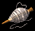

蜘蛛线
物品类型：任务道具
属性资料
| 描述 | 在道馆灌木林或赤月山谷杀死蜘蛛时以一定概率得到蜘蛛网。拿到村子里每一个可以卖500金币，据说由于蜘蛛网有很好的韧劲，因此与一般的制衣原料相比，用它可以作出十分耐磨的衣服。 |
|---|
说明
在道馆灌木林或赤月山谷杀死蜘蛛时以一定概率得到蜘蛛网。拿到村子里每一个可以卖500金币，据说由于蜘蛛网有很好的韧劲，因此与一般的制衣原料相比，用它可以作出十分耐磨的衣服。

物品类型：任务道具
| 描述 | 在道馆灌木林或赤月山谷杀死蜘蛛时以一定概率得到蜘蛛网。拿到村子里每一个可以卖500金币，据说由于蜘蛛网有很好的韧劲，因此与一般的制衣原料相比，用它可以作出十分耐磨的衣服。 |
|---|
在道馆灌木林或赤月山谷杀死蜘蛛时以一定概率得到蜘蛛网。拿到村子里每一个可以卖500金币，据说由于蜘蛛网有很好的韧劲，因此与一般的制衣原料相比，用它可以作出十分耐磨的衣服。